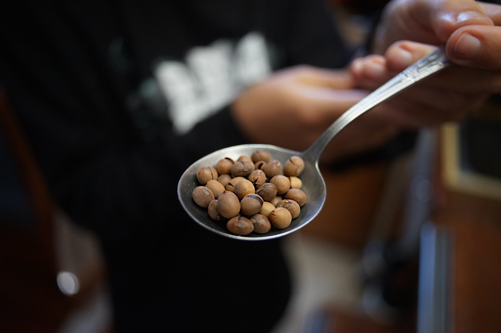
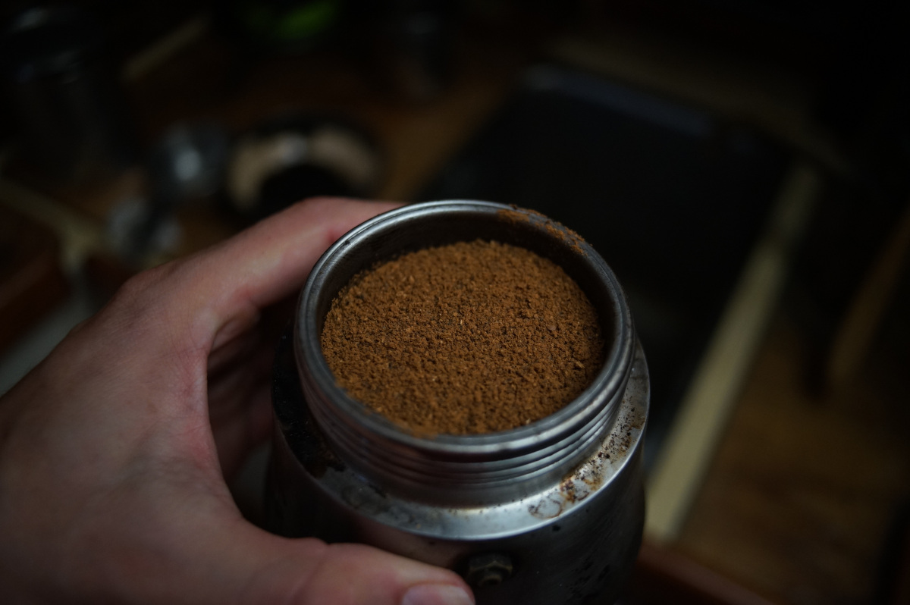

soybean coffee
180 g — 45 minutes

We once had a vegetarian cookbook aboard by Louise Hagler that mentioned coffee made from soybeans, although their recipe was very short and devoid of detail. The authors grew their own soy, and made a variety of dishes using it as a base. As you know, we have been experimenting with soybeans ourselves a lot this year, and we finally roasted some to make a coffee alternative. The first time was an accident, after over-roasting beans for kinako(a pleasant error).
Soybean coffee smells and tastes like kinako, it is sweet and nutty. It is a very good, caffeine-free, and inexpensive alternative to coffee(we prefer it to chicory). Note that we are not coffee experts, and we tend to use simple tools.
We solar-cook our beans using a solar-evacuated tube, but here are instructions for other ways to prepare them.
Oven instructions: Spread the beans on a baking tray, one bean deep, and preheat the oven to 150°C (300°F), roast for 25-30 minutes, shaking the beans every 10 minutes so they brown somewhat evenly. You may have to roast them for longer, depending on your oven. To be fair, all of the method listed here will likely not result in perfect even browning, if you want this you're better off getting a proper roaster, but personally, we are very content with the flavor of unevenly roasted beans.
Stovetop: Preheat the pan over medium-high heat. When a droplet of water fizzes away fairly quickly, but not immediately, add the dry soybeans. Stir constantly to prevent scorching. This method may smoke up the room... have a window or fan running. Roast until the inside bean is dark brown.
- soy beans180 g (1 cup)
roast
- Place 180 g(1 cup) of dry soybeans in the tray of the solar-cooker.
- Solar-roasting time varies depending on local conditions, but it if it's sunny it shouldn't take longer than 45 minutes. Check the beans often to make sure they don't burn. When the beans start to smell nutty, open the tray and shake the beans a little so they roast evenly. We shake every 15 minutes or so. When ready, the outer skin of the beans will split and the inside will turn a dark brown color. Note that the outside will not brown as much as the insides, but for coffee they will turn a light brown color.
- Transfer the roasted beans into a bowl, let cool.
- Once cooled off, grind the beans(skins and all) in a grain or coffee grinder (we use a ceramic-burred hand grinder). The resulting grains are softer to grind than some coffee roasts we've had.

- Keep in a cool dry place. Brew as you would a regular cup of coffee (1 tbsp grounds per cup of water).